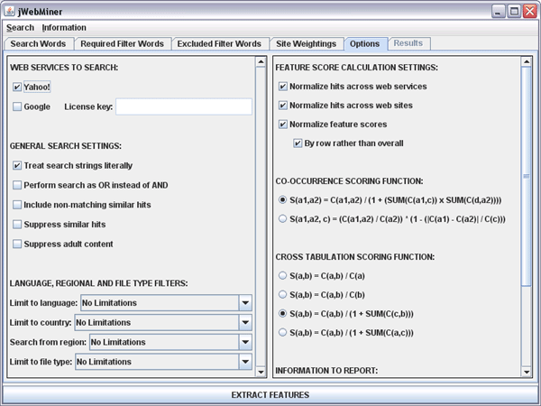

The Options Panel is a GUI panel allowing users to select options
affecting the details of feature extraction. This panel is divided into two
sections. The left section allows users to select the web service(s) to submit
queries to and to set query preferences that affect the types and numbers of
hits returned by queries. The right section allows users to set the details
of how final feature values will be calculated from raw hit counts and
which reports will be displayed in the Results Panel after feature extraction is complete.
A screenshot of the Options Panel is shown in Figure 1.

Figure 1: A screenshot of the Options Panel showing
default settings.
This section of the manual is divided into seven sections, one for each of
the seven sections of the Options Panel interface:
1) WEB SERVICES TO SEARCH
The options in this section allow the user to control which web services to
submit queries to. Passwords to use the services may also be entered here, if
appropriate.
Although multiple web services may be selected, this will increase the duration of
feature extraction compared to only using one web service. The hit counts
for each selected web service are combined during final feature calculation.
The limitations of each web service are described in the Hints
and Suggestions section of this manual.
It may be useful for those with software development backgrounds to implement
additional web services, as described in the Extending
the Software section of this manual.
The specific options in this section are as follows:
- Yahoo!: Whether queries are to be submitted to the Yahoo! REST-like Web Search web services. The Yahoo! Application
Key is hard coded into jWebMiner because Yahoo!'s quota is 5000 queries per
day per source IP address, so multiple users will not reduce
the quota available to each user.
- Google: Whether queries are to be submitted to the Google SOAP web services. A Google distributed License Key must
be entered in the License key field for Google to be accessed.
This key is not hard coded into jWebMiner because Google imposes a limit
of 1000 queries per day with a particular key, regardless of source IP address, so
each user needs their own key to avoid reducing the quota available to other
users.
2) GENERAL SEARCH SETTINGS
The options in this section allow the user to control miscellaneous settings
influencing how searches are performed and what types of results are returned.
It is in general best for users to leave these preferences as they are unless
they are expert users. This is because these controls can have significant effect
on returned hit counts and because not all of these options are supported
by all web services.
The specific options in this section are as follows:
- Treat strings literally: Whether all search queries
should be literal searches (e.g. for the query "heavy metal" sites must
have the two words adjacent if they are to be considered a hit if
the search is literal). This is also sometimes known as an exact search
or a phrase search.
- Perform search as OR instead of AND: Whether search queries
need only contain one of the specified query words in order to result in a
hit. If this is set to true, then only one of the query words must be present.
If this is set to false, then all of them must be present (although not necessarily
in the specified order, unless the Treat strings literally checkbox
is selected). It is recommended that the user leave this box unchecked.
- Include non-matching similar hits: Whether results
returned by search queries may include hits that do not contain one or more of
the specified query words but do contain terms very similar to them (e.g.
alternative spellings).
- Suppress similar hits: Whether to suppress similar hits
when reporting results. Similar in this context means either sites with identical
titles and/or descriptions, or multiple hits from the same host.
- Suppress adult content: Whether to suppress hits that are
classified as containing adult content by the search service in question.
3) LANGUAGE, REGIONAL AND FILE TYPE FILTERS
The options in this section allow the user to control filters (of a different
type than those in the Required Filter
Words Panel and Excluded
Filter Terms Panel) that limit the types of hits that can be returned. The
geographical region that searches are performed in can also be specified.
These options must be chosen from the available options in the provided combo
boxes. A choice of "No Limitations" means that the corresponding filter is not
applied.
The specific options in this section are as follows:
- Limit to language: Sets the name of a language that pages
must be in in order to be counted as hits.
- Limit to country: Sets the country that pages must be found
in in order to be counted as hits.
- Search from region: Sets the name of a country where searches
will be performed (i.e. where the search service is located). Results are
not necessarily limited to this country, however.
- Limit to file type: Sets the file type that documents
must be in in order to be counted as hits.
4) FEATURE SCORE CALCULATION SETTINGS
The options in this section control whether various types of normalization
are applied during final feature calculation. None, some or all of these normalizations
can be applied. The specific options in this section are as follows:
- Normalize hits across web services: Whether hit counts
from different web services should be normalized before final feature scores
are calculated. This ensures that services that produce fewer hits overall
are not underweighted in the final scores. The overall hit counts for each
web service are scaled to the overall number of hits of the service with the
lowest number of hits. This checkbox has no effect if only one web service
is selected in the WEB SERVICES TO SEARCH section of the Options
Panel.
- Normalize hits across web sites: Whether hits from different
sources (individual web sites and/or the network as a whole, as set in the
Site Weightings Panel) should be
normalized before final feature scores are calculated. This ensures that sources
that produce fewer hits overall are not underweighted in the final scores.
This is separate and in addition to the manual weights that can be imposed
on the Site Weightings Panel, which
are not affected by whether or not normalization is applied. The overall hit
counts for each source are normalized to the overall number of hits of the
source with the lowest number of hits overall. This checkbox has no effect
if only one source is specified with the Site
Weightings Panel.
- Normalize feature settings: Whether final feature values
should be normalized after all other feature calculation steps have been completed.
If the By row rather than overall checkbox is selected then
this normalization is performed on a row by row basis (so that the sum of
feature values in each row of the table of feature scores is 1.0), otherwise
it is an overall normalization for the table of scores (so that the sum of
all feature values is 1.0).
5) CO-OCCURRENCE SCORING FUNCTION
The section controls which formula is used to calculate final feature values
from hit counts when the Co-Occurrence Extraction option is selected
in the Search Words Panel. These formulas
are applied to hit counts after hit counts have been combined across sources
(as set in the Site Weightings Panel)
and across web services (as set in the WEB SERVICES TO SEARCH section
of the Options Panel). These formulas are also applied after source
weightings (as set in the Site Weightings
Panel) and normalizations (as set in the FEATURE SCORE CALCULATION SETTINGS
section of the Options Panel) have been used to process hit counts.
The exception to this is the Normalize feature settings normalization,
which is applied after the chosen formula has been applied.
Which formula is best to use depends on the kind of search that is being performed,
and it can be useful to experiment with different formulas. It may also be useful
for those with software development backgrounds to implement additional formulas,
as described in the Extending the Software section
of this manual.
The specific options in this section are given below as well as references
to publications that detail their previous use.
- S(a1,a2) = C(a1,a2) / (1 + (SUMcfromAcnota1(C(a1,c)) x SUMdfromAdnota2(C(d,a2))))
- Geleijnse, G., and J. Korst. 2006. Web-based artist categorization.
Proceedings of the International Conference on Music Information Retrieval.
266–71.
- S(a1,a2, c) = (C(a1,a2) / C(a2)) * (1 - (|C(a1) - C(a2)| / C(c)))
- Ellis, D. P. W., B. Whitman, A. Berenzweig, and S. Lawrence. 2002. The
quest for ground truth in musical artist similarity. Proceedings of
the International Conference on Music Information Retrieval. 170–7.
- In this formula c refers to the the element from A with the largest
C(A).
The notation used in the above formulas is defined as follows:
- S() refers to the scoring function that outputs feature scores (before Normalize
feature settings normalization, if selected).
- C() refers to the processed hit counts for the input query combined across
web services and weighted network sites and after web service and web site
normalization, if selected. If only one web service is used and only one source
(including the possibility of the whole network) is used then this is just
the raw hit count for the input query.
- A is the set of lines in the PRIMARY SEARCH STRINGS field of the
Search Words Panel.
- a1 and a2 each refer to individual elements from the set A.
6) CROSS TABULATION SCORING FUNCTION
The section controls which formula is used to calculate final feature values
from hit counts when the Cross Tabulation Extraction option is selected
in the Search Words Panel. These formulas
are applied to hit counts after hit counts have been combined across sources
(as set in the Site Weightings Panel)
and across web services (as set in the WEB SERVICES TO SEARCH section
of the Options Panel). These formulas are also applied after source
weightings (as set in the Site Weightings
Panel) and normalizations (as set in the FEATURE SCORE CALCULATION SETTINGS
section of the Options Panel) have been used to process hit counts.
The exception to this is the the Normalize feature settings normalization,
which is applied after the chosen formula has been applied.
Which formula is best to use depends on the kind of search that is being performed,
and it can be useful to experiment with different formulas. It may also be useful
for those with software development backgrounds to implement additional formulas,
as described in the Extending the Software section
of this manual.
The specific options in this section are given below as well as references
to publications that detail their previous use.
- S(a,b) = C(a,b) / C(a)
- Schedl, M., T. Pohle, P. Knees, and G. Widmer. 2006. Assigning and visualizing
music genres by web-based co-occurrence analysis. Proceedings of the
International Conference on Music Information Retrieval. 260–5.
- S(a,b) = C(a,b) / C(b)
- Schedl, M., T. Pohle, P. Knees, and G. Widmer. 2006. Assigning and visualizing
music genres by web-based co-occurrence analysis. Proceedings of the
International Conference on Music Information Retrieval. 260–5.
- S(a,b) = C(a,b) / (1 + SUMcfromA(C(c,b)))
- Geleijnse, G., and J. Korst. 2006. Web-based artist categorization.
Proceedings of the International Conference on Music Information Retrieval.
266–71.
- S(a,b) = C(a,b) / (1 + SUMcfromB(C(a,c)))
The notation used in the above formulas is defined as follows:
- S() refers to the scoring function that outputs feature scores (before Normalize
feature settings normalization, if selected).
- C() refers to the processed hit counts for the input query combined across
web services and weighted network sites and after web service and web site
normalization, if selected. If only one web service is used and only one source
(including the possibility of the whole network) is used then this is just
the raw hit count for the input query.
- A is the set of lines in the PRIMARY SEARCH STRINGS field of the
Search Words Panel.
- B is the set of lines in the SECONDARY SEARCH STRINGS field of
the Search Words Panel.
- a refers to an individual element from the set A.
- b refers to an individual element from the set B.
7) INFORMATION TO REPORT
The options in this section control which types of reports are generated and
displayed in the Results Panel after feature
extraction is complete. These reports are each presented in tables labeled by
search strings (except for the Search settings used report).
All, some or none of these reports may be selected, but regardless of the
reports selected here feature values are also stored after extraction so that
they can be saved in the Results Panel as ACE
XML, Weka
ARFF or newline delimited text files. Reports are displayed in the Results
Panel in the same order that they appear here in the Options Panel.
These reports can be useful in debugging and/or understanding why feature scores
are as they are, as they can be used to view processing at various intermediate
stages.
Note that in the case where the Co-Occurrence Extraction option is
selected in the Search Words Panel that
entries on the diagonal of each report table are left empty in each of the reports
and are set to 0 if saved, as they are not significant.
The specific options in this section are as follows:
- Feature scores: Whether or not to display the final feature
scores that may be saved as features after feature extraction is complete.
This report is displayed in a table with the highest value in each row italicized
and bolded.
- Combined processed hit counts: Whether or not to display
the combined (added) processed hit counts for all web services and sites after
pre-processing is complete. This does take into account site weighting and/or
source and web service normalization, if they have been selected by the user.
It does not include the application of scoring functions or feature score
normalization, however.
- Combined raw hit counts: Whether or not to display the
combined hit counts added together across all web services and sites after
queries are all completed. This does not take into account site weighting,
any normalizations or application of scoring functions.
- Individual raw hit counts: Whether or not to individually
display the raw hit counts for each web service and each network source after
queries are all completed but before hit counts have been combined or otherwise
processed.
- Search queries used: Whether or not to display the queries
that are actually sent to each of the web services. Note that these queries
will not include information that was stored in the actual web service objects
themselves, so the queries may appear incomplete in the case of some web services.
This report is combined into the same table with the Individual raw hit
counts report if it is selected to be generated, and is generated separately
if it is not.
- Search settings used: Whether or not to display the details
of all of the settings used to perform feature extractions. This is useful
for maintaining a record of the settings used each time that features are
extracted.
-top of page-